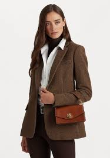
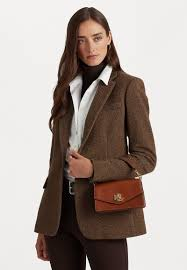

A medida que cambian las estaciones, las texturas intensas, los colores llamativos y las capas elegantes forman la base de un guardarropa atemporal. Los nuevos clásicos y la sastrería exclusiva son una opción sencilla para quienes recién comienzan a perfeccionar su estilo o para quienes lucen su confianza con facilidad.
R lph Lauren
lph Lauren
 
